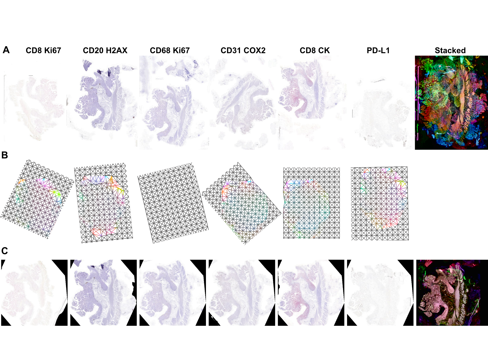

VALIS, which stands for Virtual Alignment of pathoLogy Image Series, is a fully automaated pipeline to register whole slide images (WSI) using rigid and/or non-rigid transformtions. A full description of the method is descriped in the paper by Gatenbee et al. 2021. VALIS uses Bio-Formats, OpenSlide, libvips, and scikit-image to read images and slides, and so is able to work with a wide variety of formats. Registered images can be saved as ome.tiff slides that can be used in downstream analyses. ome.tiff format is opensource and widely supported, being readable in several different programming languages (Python, Java, Matlab, etc…) and software, such as QuPath, HALO by Idica Labs, etc…
The registration pipeline is fully automated and goes as follows:

Images/slides are converted to numpy arrays. As WSI are often too large to fit into memory, these images are usually lower resolution images from different pyramid levels.
Images are processed to single channel images. They are then normalized to make them look as similar as possible.
Image features are detected and then matched between all pairs of image.
If the order of images is unknown, they will be optimally ordered based on their feature similarity
Rigid registration is performed serially, with each image being rigidly aligned to the previous image in the stack. VALIS uses feature detection to match and align images, but one can optionally perform a final step that maximizes the mutual information betweeen each pair of images.
Non-rigid registration is then performed either by:
aliging each image towards the center of the stack, composing the deformation fields along the way
using groupwise registration that non-rigidly aligns the images to a common frame of reference.
Error is measured by calculating the distance between registered matched features in the full resolution image.
The transformations found by VALIS can then be used to warp the full resolution slides. It is also possible to merge non-RGB registered slides to create a highly multiplexed image. These aligned and/or merged slides can then be saved as ome.tiff images using pyvips.
In addition to warping images and slides, VALIS can also warp point data, such as cell centoids or ROI coordinates.
Table of Contents
Installation¶
Note
VALIS requires Python >=3.7
conda (recommened for non-Windows users)¶
VALIS is available in the conda-forge channel of conda. However, unfortunately libvips, a core dependency, is not yet available for Windows users on conda-forge.
Before proceeding, make sure the conda-forge is on the conda channel list:
$ conda config --append channels conda-forge
Next, create and activate a virtual environment. This example use “valis_conda_env” for the virtual environment name, but it could be anything you’d like.
$ conda update conda
$ conda create -n valis_conda_env python
$ conda activate valis_conda_env
Finally, install using conda
$ conda install -c conda-forge wsi_valis
pip¶
Prerequisites¶
VALIS uses Bioforamts to read many slide formats. Bioformats is written in Java, and VALIS uses the Python package jpype to access the Bioformats jar. Therefore, the user will need to have installed a Java Development Kit (JDK) containing the Java Runtime Environment (JRE):
Download appropriate JDK from java downloads
Edit your system and environment variables to update the Java home
$ export JAVA_HOME=/usr/libexec/java_home
Verify the path has been added:
$ echo $JAVA_HOME
should print something like
usr/libexec/java_home(optional) If you will be working with files that have extensions: ‘.vmu’, ‘.mrxs’ ‘.svslide’, you will also need to install OpenSlide. Note that this is not the same as openslide-python, which contains Python wrappers for OpenSlide.
Important
OpenSlide requires pixman, which must be version 0.40.0. If pixman is a different version, then the slides may be distorted when reading from any pyramid level other than 0.
VALIS uses pyvips to warp and save the whole slide images (WSI) as ome.tiffs. Pyvips requires libvips (not a Python package) to be on your library search path, and so libvips must be installed separately. See the pyvips installation notes for instructions on how to do this for your operating system. If you already have libvips installed, please make sure it’s version is >= 8.11.
Install¶
Once the above prerequisites have been satistifed, valis can be installed using pip, preferably within a virtual environment
$ python3 -m venv venv_valis
$ source ./venv_valis/bin/activate
$ python3 -m pip install --upgrade pip
$ python3 pip install valis
SimpleElastix (optional)¶
The defaults used by VALIS work well, but VALIS also provides optional classes that require SimpleElastix. In particular, these classes are:
affine_optimizer.AffineOptimizerMattesMI, which uses sitk.ElastixImageFilter to simultaneously maximize Mattes Mutual Information and minimize the spatial distance between matched features.
non_rigid_registrars.SimpleElastixWarper, which uses sitk.ElastixImageFilter to find non-rigid transformations between pairs of images.
non_rigid_registrars.SimpleElastixGroupwiseWarper, which uses sitk.ElastixImageFilter to find non-rigid transformations using groupwise registration.
To install SimpleElastix, you should probably uninstall the current version of SimpleITK in your environment, and then install SimpleElastix as described in the SimpleElastix docs.
Examples¶
Important
Always be sure to always kill the JVM at the end of your script. Not doing so can prevent the software from closing. This can be accomplished by calling either registration.kill_jvm() or slide_io.kill_jvm()
Slide registration¶
Important
One of the most imporant parameters used to initialize a Valis object is max_processed_image_dim_px. If registration fails or is poor, try adjusting that value. Generally speaking, values between 500-2000 work well. In cases where there is little empty space, around the tissue, smaller values may be better. However, if there is a large amount of empty space/slide (as in the images above), larger values will be needed so that the tissue is at a high enough resolution.
In this example, the slides that need to be registered are located in /path/to/slides. This process simply involves the creation of a Valis object, which is what conducts the registration.
from valis import registration
slide_src_dir = "/path/to/slides"
results_dst_dir = "./slide_registration_example"
registered_slide_dst_dir = "./slide_registration_example/registered_slides"
# Create a Valis object and use it to register the slides in slide_src_dir
registrar = registration.Valis(slide_src_dir, results_dst_dir, max_processed_image_dim_px=1000)
rigid_registrar, non_rigid_registrar, error_df = registrar.register()
After registration is complete, one can view the results to determine if they are acceptable. In this example, the results are located in ./slide_registration_example. Inside this folder will be 6 subfolders:
data contains 2 files: * a summary spreadsheet of the alignment results, such as the registration error between each pair of slides, their dimensions, physical units, etc…
a pickled version of the registrar. This can be reloaded (unpickled) and used later. For example, one could perfom the registration locally, but then use the pickled object to warp and save the slides on an HPC. Or, one could perform the registration and use the registrar later to warp points found in the (un-registered) slide.
overlaps contains thumbnails showing the how the images would look if stacked without being registered, how they look after rigid registration, and how they look after non-rigid registration. The rightmost images in the figure above provide examples of these overlap images.
rigid_registration shows thumbnails of how each image looks after performing rigid registration. These would be similar to the bottom row in the figure above.
non_rigid_registration shows thumbnaials of how each image looks after non-rigid registration. These would be similar to the bottom row in the figure above.
deformation_fields contains images showing what the non-rigid deformation would do to a triangular mesh. These can be used to get a sense of how the images were altered by non-rigid warping. In these images, the color indicates the direction of the displacement, while brightness indicates it’s magnitude. These would be similar to those in the middle row in the figure above.
processed shows thumnails of the processed images. These are thumbnails of the images that are actually used to perform the registration. The pre-processing and normalization methods should try to make these images look as similar as possible.
If the results look good, then one can warp and save all of the slides as ome.tiffs.
# Save all registered slides as ome.tiff
registrar.warp_and_save_slides(registered_slide_dst_dir)
# Kill the JVM
registration.kill_jvm()
The ome.tiff images can subsequently be used for downstream analysis, such as QuPath

One can also choose to save individual slides. This is accomplished by accessing the Slide object associated with a particular file, slide_f and then “telling” it to save the slide aas out_f.ome.tiff.
slide_obj = registrar.get_slide(slide_f)
slide_obj.warp_and_save_slide(out_f.ome.tiff)
Finally, if the non-rigid registration is deemed to have distored the image too much, one can apply only the rigid transformation by setting non_rigid=False in slide_obj.warp_and_save_slide or registrar.warp_and_save_slides.
Slide registration and merging¶
Following registration, VALIS can merge the slides to create a single composite image. However, this should only be done for non-RGB images, such as multi/single-channel immunofluorescence images. An example would be slides of multiple CyCIF rounds. The user also has the option to provide channel names, but if not provided the channel names will become the “channel (filename)” given the channel name in the metadata. For example, if the file name is round1.ndpis then the DAPI channel name will be “DAPI (round1)”). In this example, the channel names are taken from the filename, which have the form “Tris CD20 FOXP3 CD3.ndpis”, “Tris CD4 CD68 CD3 1in25 ON.ndpis”, etc… The channel names need to be in a dictionary, where key=filename, value = list of channel names.
Important
By default, if a channel occurs in more than 1 image, only the 1st instance will be merged. For example, if DAPI is in all images, then only the DAPI channel of the 1st image will be in the resulting slide. This can be disabled by setting drop_duplicates=False in warp_and_merge_slides
First, create a VALIS object and use it to register slides located in slide_src_dir
from valis import registration
slide_src_dir = "/path/to/slides"
results_dst_dir = "./slide_merging_example" # Registration results saved here
merged_slide_dst_f = "./slide_merging_example/merged_slides.ome.tiff" # Where to save merged slide
registrar = registration.Valis(slide_src_dir, results_dst_dir)
rigid_registrar, non_rigid_registrar, error_df = registrar.register()
Check the results in results_dst_dir, and if the look good merge and save the slide. Once complete, be sure to kill the JVM.
# Create function to extract channel names from the image.
def cnames_from_filename(src_f):
"""Get channel names from file name
Note that the DAPI channel is not part of the filename
but is always the first channel.
"""
f = valtils.get_name(src_f)
return ["DAPI"] + f.split(" ")[1:4]
channel_name_dict = {f:cnames_from_filename(f) for f in registrar.original_img_list}
merged_img, channel_names, ome_xml = \
registrar.warp_and_merge_slides(merged_slide_dst_f,
channel_name_dict=channel_name_dict,
drop_duplicates=True)
registration.kill_jvm() # Kill the JVM

Warping points¶
Once the registration parameters have been found, VALIS can be used to warp point data, such as cell coordinates, mask polygon vertices, etc… In this example, slides will be registered, and the registration parameters will then be used warp cell positions located in a separate .csv. This accomplished by accessing the Slide object associated with each registered slide. This is accomplished by passing the slide’s filename (with or without the extension) to registrar.get_slide. This Slide object can the be used to warp the individual slide and/or points associated with the un-registered slide. This can be useful in cases where one has already performed an analysis on the un-registered slides, but would now like to use that data for a larger spatial analysis.
Important
It is essential that the image from which the coordinates are derived has the same aspect ratio as the image used for registration. That is, the images used for registration must be scaled up/down versions of the image from which the coordinates are taken. For example, registration may be performed on lower resolution images (an upper image pyramid level), and applied to cell coordinates found by performing cell segmenation on the full resolution (pyramid level 0) image. The default is to assume that the points came from the highest resolution image, but this can be changed by setting pt_level to either the pyramid level of the image the points originated, or its dimensions (width, height, in pixels). Also, the coordinates need to be in pixel units, not physical units. Finally, be sure that the coordinates are X,Y (column, row), with the origin being the top left corner of the image.
import os
import numpy as np
import pandas as pd
import pathlib
from valis import registration
slide_src_dir = "path/to/slides"
point_data_dir = "path/to/cell_positions"
results_dst_dir = "./point_warping_example"
# Create a Valis object and use it to register the slides in slide_src_dir
registrar = registration.Valis(slide_src_dir, results_dst_dir)
rigid_registrar, non_rigid_registrar, error_df = registrar.register()
# Get .csv files containing cell coordinates
point_data_list = list(pathlib.Path(point_data_dir).rglob("*.csv"))
# Go through each file and warp the cell positions
for f in point_data_list:
# Get Slide object associated with the slide from which the point data originated
# Point data and image have similar file names
fname = os.path.split(f)[1]
corresponding_img = fname.split(".tif")[0]
slide_obj = registrar.get_slide(corresponding_img)
# Read data and calculate cell centroids (x, y)
points_df = pd.read_csv(f)
x = np.mean(points_df[["XMin", "XMax"]], axis=1).values
y = np.mean(points_df[["YMin", "YMax"]], axis=1).values
xy = np.dstack([x, y])[0]
# Use Slide to warp the coordinates
warped_xy = slide_obj.warp_xy(xy)
# Update dataframe with registered cell centroids
points_df[["registered_x", "registered_y"]] = warped_xy
# Save updated dataframe
pt_f_out = os.path.split(f)[1].replace(".csv", "_registered.csv")
full_pt_f_out = os.path.join(results_dst_dir, pt_f_out)
points_df.to_csv(full_pt_f_out, index=False)
registration.kill_jvm() # Kill the JVM
Here is a comparison of before and after applying registration to cell positions found in the original un-aligned images:

Converting slides to ome.tiff¶
In addition to registering slide, VALIS can convert slides to ome.tiff, maintaining the original metadata. If the original is image is not RGB, the option perceputally_uniform_channel_colors=True can be used to give each channel a perceptually uniform color, derived from the JzAzBz colorspace. An advantage of using perceptually uniform colors is that markers should appear brighter only if there is higher expression, not because the color (such as yellow) is perceived to be brighter.
from valis import slide_io
slide_src_f = "path/to/slide
converted_slide_f = "converted.ome.tiff"
slide_io.convert_to_ome_tiff(slide_src_f,
converted_slide_f,
level=0,
perceputally_uniform_channel_colors=True)
slide_io.kill_jvm()

Using non-defaults¶
The defaults used by VALIS work well, but one may wish to try some other values/class, and/or create their own affine optimizer, feature detector, non-rigid registrar, etc… This examples shows how to conduct registration using non-default values
Note
This example assumes that SimpleElastix has been installed.
from valis import registration, feature_detectors, non_rigid_registrars, affine_optimizer
slide_src_dir = "path/to/slides"
results_dst_dir = "./slide_registration_example_non_defaults"
registered_slide_dst_dir = "./slide_registration_example/registered_slides"
# Select feature detector, affine optimizer, and non-rigid registration method.
# Will use KAZE for feature detection and description
# SimpleElastix will be used for non-rigid warping and affine optimization
feature_detector_cls = feature_detectors.KazeFD
non_rigid_registrar_cls = non_rigid_registrars.SimpleElastixWarper
affine_optimizer_cls = affine_optimizer.AffineOptimizerMattesMI
# Create a Valis object and use it to register the slides in slide_src_dir
registrar = registration.Valis(slide_src_dir, results_dst_dir,
feature_detector_cls=feature_detector_cls,
affine_optimizer_cls=affine_optimizer_cls,
non_rigid_registrar_cls=non_rigid_registrar_cls)
rigid_registrar, non_rigid_registrar, error_df = registrar.register()
registration.kill_jvm() # Kill the JVM